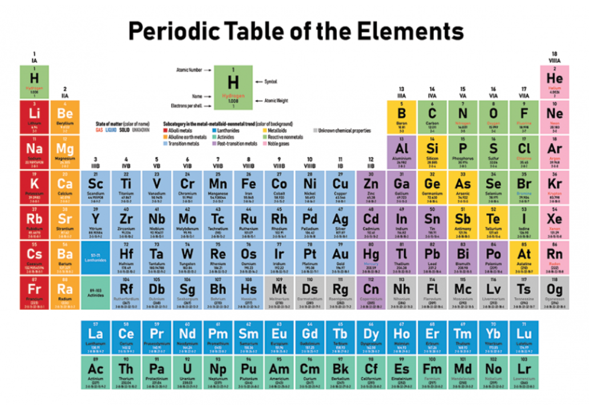

Atom and Element Breakdown
by Athavan Shanmuganathan

The periodic table of elements is a diagram many people have seen and is a staple to chemistry. To understand the periodic table, we must first understand the basics of chemistry. By the end of this article, you should understand the following terms: atoms, matter, electrons, neutrons, protons, nucleus, elements, compounds, atomic number, and atomic mass.
First, let us talk about what an atom is. An atom is defined as the smallest unit of matter. Matter is all around us: your fingers, your food, your school, all of it is made up of matter. Matter is described as anything that takes up space and is made up of very tiny particles known as atoms. Multiple models are used to describe what atoms look like but the most common diagram contains three smaller particles: protons, electrons, and neutrons. Protons are particles with a positive charge, electrons are particles with a negative charge, and neutrons are particles with no charge at all. The diagram shown describes the atom to have its protons and neutrons bound together in the center which is what we call the nucleus, meanwhile the electrons are orbiting the nucleus around it. But how many protons, electrons, and neutrons can an atom have? Well, we differentiate between the different amounts of particles by separating them into what we call elements!

An element is a specific type of atom with a very specific amount of particles. For example, hydrogen is the first element in the periodic table and is represented by an “H” along with the number 1 which is its atomic number. Well, what this means is that a hydrogen atom contains 1 electron and 1 proton. The amount of neutrons depends on the atomic mass which is weighed on a scale. The average atomic mass of hydrogen is about 1 u or 1 universal unit. To find the number of neutrons, we take the 1 u and subtract the number of protons the atom has which is only 1 so: 1 - 1 = 0 neutrons in total. The average hydrogen does not contain any neutrons but this is not always the case in the terms of isotopes that do not use the average atomic mass that is on the periodic table. Let’s look at another example, Oxygen has an atomic number of 8 which means it has 8 protons and 8 neutrons. The atomic mass on the other hand is about 16 u. By using the formula from before: 16 - 8 = 8 neutrons are in the nucleus of an oxygen atom. Now, these specific elements have different properties from one another which makes each of them unique, but the periodic table of elements can order the different elements based on the atomic masses/atomic number.
The periodic table may look confusing at first but it is very useful for many deeper things which will be discussed in another article. However, a common use is to understand chemical compounds which is a substance that is created from the formation of two or more elements. The most common example of a compound is water because its chemical formula is H2O. The chemical formula is an abbreviation of the compound made from the symbols in the periodic table of elements, so H2O would represent 2 hydrogen atoms being connected to 1 oxygen atom. The connection between the atoms would then add to the weight of the compound so we simply add the masses of the elements together: 1 u + 1 u + 16 u = 18 u in total. The compounds that are made have multiple applications and are all around us whether you realize it or not.
Overall, basic chemistry is everywhere and affects our daily lives constantly. Atoms are the smallest units of matter which are made of protons, neutrons, and electrons. Elements are the different types of atoms that vary in the number of these smaller particles and compounds are the combination of multiple atoms or elements. The periodic table can order these elements by their atomic mass which is the amount of matter the element has or its atomic number which is the number of protons/electrons. The periodic table of elements is much more complex and I will gladly discuss it in further detail in another article.